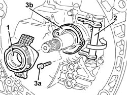

2110C24 SEALS FOR GEARBOX INPUT SHAFT - R R FOR MANUAL GEARBOX WITH HYDRAULIC SELECTION VERSIONS
- Path
- Procedures > 21 GEARBOX UNIT > 2110 MANUAL GEARBOX WITH DIFFERENTIAL > 2110C GEAR CASES AND COVERS OF MANUAL GEARBOX WITH DIFFERENTIAL > 2110C24 SEALS FOR GEARBOX INPUT SHAFT - R R FOR MANUAL GEARBOX WITH HYDRAULIC SELECTION VERSIONS
- Kind
- repair procedure (removal / refitting; the operation number is the code)
- Applies to
- engines: 2.0 JTS; all production periods; only with equipment: Smart gearbox
- Interactive page
- https://sloeber94.github.io/elrnDB-aGt/en/#/125001252
Applies to: engines: 2.0 JTS; all production periods
 Removing
Removing
 Refitting
Refitting- Op. 1016A40 IGNITION COIL COVER ON CYLINDER HEAD- R+R
- Op. 1048A59 PIPE from flow meter to throttle casing hose - R.R.
- Op. 5530B10 BATTERY - R+R
- Op. 5530B52 BATTERY DRIP TRAY/SUPPORT - R.R.
- Op. 4450B02 LEFT FRONT WHEEL R R
- Op. 7055B90 LEFT FRONT WHEEL ARCH LINER - R.R.
- Op. 7055B54 UNDER-ENGINE GUARD - R R
- Op. 2127C40 HYDRAULIC SPEED SELECTION HYDRAULIC ACTUATOR UNIT AND CLUTCH - R R
- Op. 0010T84 COOLANT FOR AIR CONDITIONING SYSTEM DEHYDRATE AND RECHARGE
- Op. 4450B04 RIGHT FRONT WHEEL R R
- Op. 5040A20 AIR CONDITIONER COMPRESSOR - R+R - INCLUDES FLUID LEVEL CHECK AND TOP UP IF NECESSARY
- Op. 5040A26 COMPRESSOR MOUNT - R R
- Op. 1076A48 CATALYTIC CONVERTER HEAT SHIELD - R R
- Op. 1080B62 CATALYTIC CONVERTER - R + R
- Op. 2110A11 MANUAL GEARBOX WITH DIFFERENTIAL - R R FOR VERSIONS WITH HYDRAULIC SELECTION
- Remove the thrust bearing.
- Rotate the clutch engagement thrust bearing control fork pin.
- Undo the bolts (3a) and remove the gearbox input shaft gasket (3b).

Applies to: engines: 2.0 JTS; all production periods
Refitting
Removing- Fit the gearbox input shaft gasket and secure it using the bolts.
- Place the thrust bearing back in its housing.
- Op. 2110A11 MANUAL GEARBOX WITH DIFFERENTIAL - R R FOR VERSIONS WITH HYDRAULIC SELECTION
- Op. 1080B62 CATALYTIC CONVERTER - R + R
- Op. 1076A48 CATALYTIC CONVERTER HEAT SHIELD - R R
- Op. 5040A26 COMPRESSOR MOUNT - R R
- Op. 5040A20 AIR CONDITIONER COMPRESSOR - R+R - INCLUDES FLUID LEVEL CHECK AND TOP UP IF NECESSARY
- Op. 4450B04 RIGHT FRONT WHEEL R R
- Op. 0010T41 MANUAL GEARBOX OIL CHECK LEVEL AND TOP UP IF NECESSARY
- Op. 2127C40 HYDRAULIC SPEED SELECTION HYDRAULIC ACTUATOR UNIT AND CLUTCH - R R
- Op. 0010T47 HYDRAULIC SYSTEM FLUID FOR GEARBOX WITH HYDRAULIC SELECTION CHECK LEVEL AND TOP UP IF NECESSARY
- Op. 0010T48 HYDRAULIC SYSTEM FOR GEARBOX WITH HYDRAULIC SELECTION BLEED AIR
- Op. 7055B54 UNDER-ENGINE GUARD - R R
- Op. 7055B90 LEFT FRONT WHEEL ARCH LINER - R.R.
- Op. 4450B02 LEFT FRONT WHEEL R R
- Op. 5530B52 BATTERY DRIP TRAY/SUPPORT - R.R.
- Op. 5530B10 BATTERY - R+R
- Op. 1048A59 PIPE from flow meter to throttle casing hose - R.R.
- Op. 0010T84 COOLANT FOR AIR CONDITIONING SYSTEM DEHYDRATE AND RECHARGE
- Op. 1016A40 IGNITION COIL COVER ON CYLINDER HEAD- R+R
Topics linked from this page (18)
- 0010T41 MANUAL GEARBOX OIL CHECK LEVEL AND TOP UP IF NECESSARY
- 0010T47 HYDRAULIC SYSTEM FLUID FOR GEARBOX WITH HYDRAULIC SELECTION CHECK LEVEL AND TOP UP IF NECESSARY
- 0010T48 HYDRAULIC SYSTEM FOR GEARBOX WITH HYDRAULIC SELECTION BLEED AIR
- 0010T84 COOLANT FOR AIR CONDITIONING SYSTEM DEHYDRATE AND RECHARGE
- 1016A40 IGNITION COIL COVER ON CYLINDER HEAD- R+R
- 1048A59 PIPE from flow meter to throttle casing hose - R.R.
- 1076A48 CATALYTIC CONVERTER HEAT SHIELD - R R
- 1080B62 CATALYTIC CONVERTER - R + R
- 2110A11 MANUAL GEARBOX WITH DIFFERENTIAL - R R FOR VERSIONS WITH HYDRAULIC SELECTION
- 2127C40 HYDRAULIC SPEED SELECTION HYDRAULIC ACTUATOR UNIT AND CLUTCH - R R
- 4450B02 LEFT FRONT WHEEL R R
- 4450B04 RIGHT FRONT WHEEL R R
- 5040A20 AIR CONDITIONER COMPRESSOR - R+R - INCLUDES FLUID LEVEL CHECK AND TOP UP IF NECESSARY
- 5040A26 COMPRESSOR MOUNT - R R
- 5530B10 BATTERY - R+R
- 5530B52 BATTERY DRIP TRAY/SUPPORT - R.R.
- 7055B54 UNDER-ENGINE GUARD - R R
- 7055B90 LEFT FRONT WHEEL ARCH LINER - R.R.